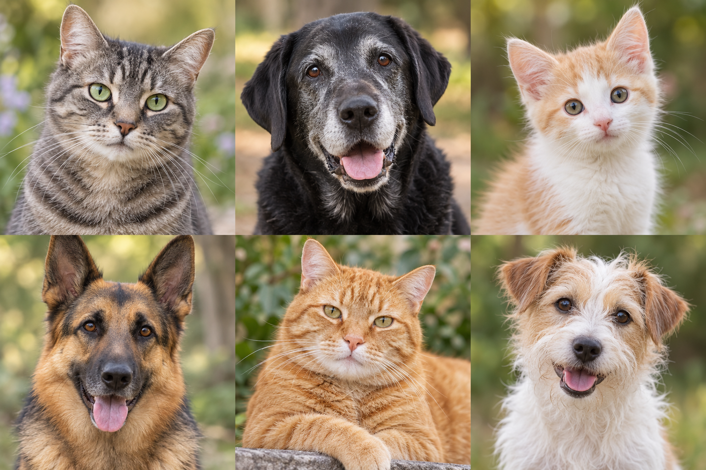

Faites connaissance
Prenez le temps de découvrir les personnalités et les besoins de chaque animal.
Des petits caractères. De grandes histoires.
Prenez le temps de découvrir celui qui partagera la vôtre.

Le cœur
n’a pas d’âge.
Essayez d’autres critères, ou ajoutez des portraits à vos coups de cœur.
Maquette de démonstration : les portraits initiaux sont fictifs et leurs photographies générées. Les coups de cœur restent dans ce navigateur lorsque son stockage est disponible.
L’adoption commence par un échange.
L’équipe est là pour vous accompagner.
Prenez le temps de découvrir les personnalités et les besoins de chaque animal.
Votre rythme de vie, votre foyer, vos attentes : chaque détail compte pour bien vous accompagner.
Contactez l’équipe pour connaître les modalités de visite et les étapes de l’adoption.